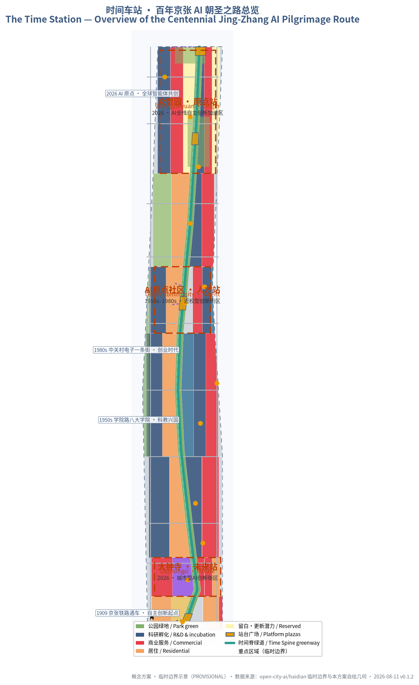
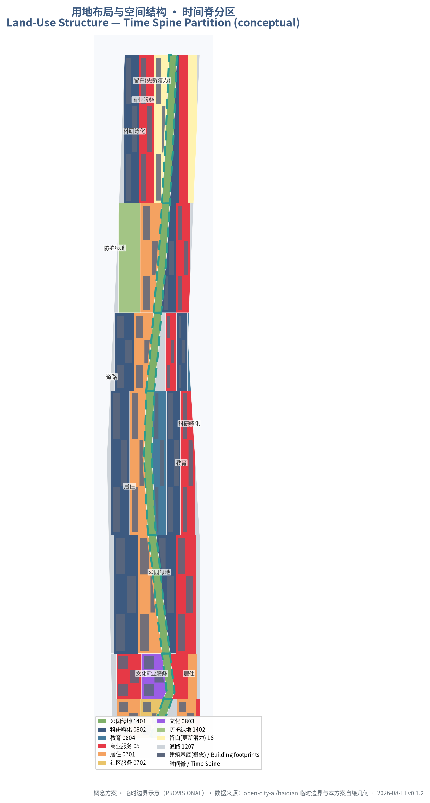
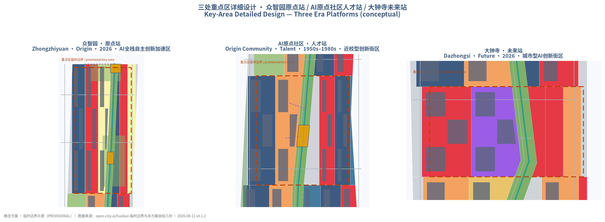
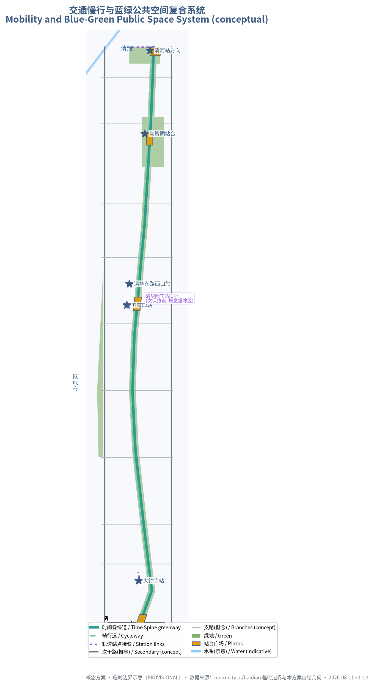
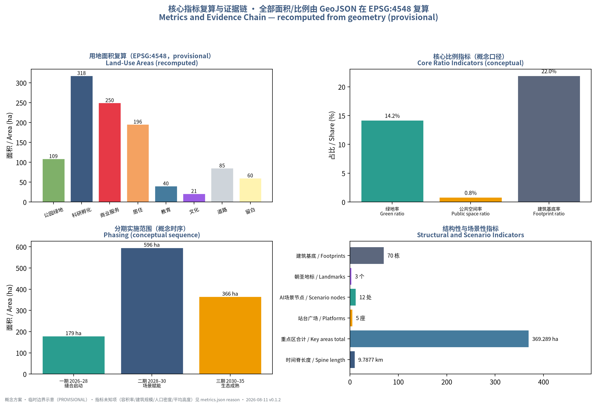

The Time Station: an AI Pilgrimage Route across a Century of Jing-Zhang
Using the 1909–2026 century timeline of the Jing-Zhang Railway as the narrative spine, the heritage park becomes the Time Spine and the three key areas become three era platforms, forming a walkable, experiential, operable AI pilgrimage route with two scenario wings; all spatial conclusions are conceptual recommendations based on provisional boundaries.
The Time Station: an AI Pilgrimage Route across a Century of Jing-Zhang
Design Basis and Source List
This proposal takes the Qualification Pre-announcement for the Centennial Jing-Zhang AI Innovation Belt International Urban Design Call, published by the Haidian Branch of the Beijing Municipal Commission of Planning and Natural Resources, as its primary basis 来源, together with the cleared agent-facing taskbook 来源, the maintainer-registered provisional boundaries 来源, standard snapshots and the source registry. The three scope levels and areas (Coordinated Research Area about 43.6 km², Overall Design Area about 11.4 km², Key-Area Detailed Design Area about 368.4 ha), the three key areas and tasks 1.3/1.4/1.5 are all cited from the announcement text and official page 来源.
Boundary transparency statement: as of the retrieval date of this draft (2026-08-10), no official polygon-level red line is available on public channels. All spatial boundaries in this proposal are provisional rough extents registered by the maintainers, used only for concept generation, display and intake self-check 空间数据 来源. Every area, ratio and length metric is recomputed from the geometry layers under EPSG:4548 and labelled as provisional 指标; once official polygons arrive they must replace the whole set and all metrics must be recalculated. The existing-conditions diagnosis is based on the public announcement, public history and the repository fact pack, with the nine data gaps registered in assumptions.json 深度. The complete machine-readable index of task coverage, standards response and design depth is kept in compliance_matrix.json, standard_matrix.json and design_depth_matrix.json, and is not duplicated in the prose 深度.
This is v0.1.1 (2026-08-11): synced with the upstream validation contract (persisted-self-check-v1) and persisted the four-gate self-check; see changelog.md.

Three-Level Scope Framework
The three scope levels implement the cascade from industrial strategy to overall urban design to detailed key-area design 来源. The Coordinated Research Area (about 43.6 km², bounded by the North 5th Ring Road, the Jingzang Expressway, Xizhimen Outer Street and Wanquanhe Road) hosts the world-class AI ecosystem study, the Three Zones and Two Wings synergy and the future-city-form research 深度; the Overall Design Area (about 11.4 km², the 1–2 km urban and industrial band around the Jing-Zhang Heritage Park) hosts renewal design at regulatory-plan urban-design depth 指标; the Key-Area Detailed Design Area (about 368.4 ha) covers the three key areas — Zhongzhiyuan, the Beijing AI Origin Community and Dazhongsi — at comprehensive-implementation-plan urban-design depth 空间数据 指标.
The proposal outputs at each level: the coordinated level delivers the Time Station naming system, global case studies and the Three Zones and Two Wings synergy mechanism; the overall level delivers the spatial structure of "Time Spine + three era platforms + two scenario wings", the land-use partition and the renewal framework 深度; the key-area level delivers a readable mini-scheme for each platform covering positioning, spatial structure, building renewal, mobility, public space, AI scenarios and implementation risk. Because the key-area polygons are provisional rectangular approximations 来源, all conclusions inside the key areas are directional only, pending official polygons and regulatory conditions 标准.

Coordinated Research Area: Industry and Future City Research
Naming and visual identity. The main name is "The Time Station" (时间车站), full name "The Time Station: an AI Pilgrimage Route across a Century of Jing-Zhang" 深度. The naming system uses the "platform" as the root concept: the whole belt is a Time Station, the Jing-Zhang Railway Heritage Park is the Time Track (the Time Spine), and the three key areas are platforms boarding different eras — Zhongzhiyuan is the "Origin Platform" (1909, the origin of self-reliant innovation), the AI Origin Community is the "Talent Platform" (the 1950s Xueyuan Road academies and the 1980s Zhongguancun entrepreneurship), and Dazhongsi is the "Future Platform" (the 2026 AI era origin). The three positioning bands — the Centennial Jing-Zhang Culture Belt, the Urban AI Life Experience Belt and the AI-Integrated Innovation Belt 来源 — map onto the "memory, experience, growth" interfaces of the Time Spine; the five functions are carried by the Three Zones and Two Wings 来源. The logo direction is "rail-and-ticks": a horizontal rail with time ticks and station marks implying the 1909–2026 span, in steel grey-blue and signal amber, using commercially usable open-source font families and no corporate or institutional marks 深度.
Three Zones and Two Wings synergy loop. Zhongzhiyuan (full-stack self-reliant innovation and AI-governance discourse) — AI Origin Community (world-class ecosystem and commercialization) — Dazhongsi (AI-native new business) form the vertical innovation chain 来源; the Zhongguancun Technology Services Wing provides IP, capital and global factor allocation, and the Xiaoyue River Scenario Empowerment Wing provides scenario opening and public experience 标准. The loop: the Origin Community converts university research into incubatable results, which move north along the Time Spine into Zhongzhiyuan for piloting and full-stack validation, then south into Dazhongsi for marketization and content consumption, with both wings providing capital, scenarios and data-compliance services throughout 指标.
Global AI ecosystem cases (mechanism transfer, not form copying). ① Silicon Valley/Palo Alto: university–venture–corporate loops in a low-density garden campus; ② Kendall Square, Boston: campus-adjacent innovation district and life-science conversion ecology, mapped to the Origin Community 来源; ③ King's Cross, London: historic-hub regeneration driving a knowledge economy district, mapped to Dazhongsi; ④ Station F, Paris: single-point super-incubator with open community operations, mapped to the Zhongzhiyuan test field; ⑤ Toronto–Waterloo corridor: corridor-style innovation belt with talent commute networks, mapped to the Time Spine commuter services; ⑥ Jurong Innovation District, Singapore: park–city integration and scenario-open governance, mapped to the Xiaoyue River wing. All six are distilled into transferable mechanisms for operations and spatial design 深度.
AI-adapted urban form. The "platform city" vision: urban space behaves like a station timetable — predictable, transferable, returnable. Public space provides plug-and-use interfaces for AI services; buildings and facilities reserve upgradability; AI culture is expressed as a public-art system of time ticks; AI society is expressed as a governance loop of human review and public participation 来源 标准.
Overall Design Area: Urban Renewal and Regulatory-Plan-Level Urban Design
Overall spatial structure: the Time Spine. A conceptual green belt running north–south through the Overall Design Area along the direction of the Jing-Zhang Railway Heritage Park 深度, with a conceptual length of about 9.79 km 指标 and a park-green area of about 1.09 km² 指标. The Time Spine has three functions: as a "stitcher", reconnecting the east and west sides of the city cut by the railway through greenways, cycleways and pedestrian crossings 指标; as a "showcase band", carrying the century timeline narrative, AI scenarios and public art 深度; and as a "service corridor", linking the three platforms and the two scenario wings 来源.
Renewal framework. The principle is "retain and renovate first, demolish and build sparingly, verify phase by phase" 深度: heritage and cultural resources (e.g., the former Qinghuayuan Station 来源), the implemented park sections and universities are retained; low-efficiency industrial space and ageing community services are renovated; new building and industrial space is reserved only on renewal-potential parcels (about 60.4 ha of reserved land 指标) and is explicitly a conceptual proposal pending regulatory confirmation 标准.
Functional proportions (conceptual): research and incubation (0802) about 318.2 ha, commercial services (05) about 249.7 ha, residential (0701) about 195.7 ha, education (0804) about 40.4 ha and culture (0803) about 21.3 ha 指标 指标 指标 指标 指标; the work–living–commerce balance is further verified at key-area level. Total building scale, heights and intensities are marked unknown with reasons in metrics.json because regulatory-plan conditions are absent 指标 指标; no fabricated approved indicators are given 深度.
Innovation network and indicator system. A conceptual "Time Station Innovation Index" is proposed with five first-level dimensions — talent density, commercialization rate, scenario openness, slow-traffic connectivity and public-space supply 深度. Recomputable items (green ratio, public-space ratio, slow-traffic length, scenario node count, etc.) carry values and formulas in metrics.json 指标 指标 指标, while talent and output indicators are marked unknown because public baselines are missing 指标.
Detailed Design of Key Areas
The three key areas correspond to the three era platforms 空间数据 深度; because the boundaries are provisional approximations, all conclusions are directional and will be deepened once official polygons are available 来源.
Zhongzhiyuan · Origin Platform (about 192.1 ha 指标). Positioning: full-stack self-reliant AI acceleration area hosting national AI platforms, standards and governance 来源. Spatial structure: a "garden-type innovation block" organizing R&D, piloting, exhibition and garden green around the platform plaza 空间数据; building renewal focuses on retrofitting low-efficiency industrial buildings with limited new construction 深度; mobility improves the connection towards the North 5th Ring Road and reserves a conceptual link to Qinghe Station 空间数据; public space hosts the "Origin Bell" landmark and the full-stack piloting test field 指标; AI scenarios include full-stack innovation testing and an AI-governance public hearing pavilion 空间数据. Implementation risk: cross-ownership renewal and test safety require professional and regulatory gatekeeping.
AI Origin Community · Talent Platform (about 104.3 ha 指标). Positioning: a campus-adjacent innovation district converting original research from Tsinghua, Peking University and the Chinese Academy of Sciences 来源. Spatial structure: a "platform plus Xueyuan Road" structure radiating slow-mobility links from the Wudaokou Talent Platform plaza 空间数据 towards the Qinghua East Road West station and the campuses 空间数据; building renewal is low-disturbance and organic, with talent housing and result-showcase space 深度. Public space hosts the "Xueyuan Road Time Platform" landmark and the open-source plaza 空间数据, with AI scenarios including the AI+education lab blocks and the result-release studio 空间数据.
Implementation risk: university ownership and heritage sensitivity (the conceptual buffer of the former Qinghuayuan Station is in the constraints layer 空间数据) require low-disturbance renewal and strict heritage compliance 来源.
Dazhongsi · Future Platform (about 72.0 ha 指标). Positioning: an urban AI innovation district gathering AI-native businesses — agents, intelligent terminals and content consumption 来源. Spatial structure: "four-quadrant pedestrian connectivity plus station–city integration" — the four-quadrant walking system around the Dazhongsi metro station 来源 links the station-front plaza (Future Platform 空间数据), AI-native retail blocks and cultural land 空间数据; non-motorized parking and static-traffic organization are completed; public space hosts the "Dazhongsi AI Bell Tower" landmark and a time-capsule drop-off 指标; AI scenarios include the unmanned smart-retail block and the AI+health kiosk 空间数据. Implementation risk: station-hub redevelopment and commercial renewal involve multiple parties and must be deepened jointly with the station-integration scheme.

AI Innovation Ecosystem, Personas, and AI+ Scenarios
Five user personas 指标. P1 AI R&D engineers (Zhongzhiyuan/Origin Community: piloting facilities, open-source collaboration, commute efficiency); P2 university faculty and students (Xueyuan Road–Origin Community: campus-adjacent conversion, academic exchange, low-cost startup space); P3 startup teams and developers (whole belt: incubation, compute and data, scenario opening); P4 residents and elders (whole belt: daily services, digital inclusion, human assistance 标准 标准); P5 tourists and global developer visitors (along the Time Spine: cultural guiding, landmark visits, international events). Personas drive the scenario-card and spatial configuration mapping 深度.
Twelve AI scenario cards 指标 (SC-01…SC-12; nodes in geometry/public_space.geojson 空间数据): SC-01 AI City Library (P2/P5); SC-02 smart unmanned retail block (P1/P3/P4); SC-03 AI+health kiosk with clinician review (P4) 标准; SC-04 autonomous shuttle test point (P1/P3); SC-05 AI+education lab block (P2); SC-06 Xueyuan Road talent service station (P1/P3); SC-07 AI Origin open-source plaza (P1/P3); SC-08 result-release studio (P1/P2/P3); SC-09 robot patrol pilot band (P4/P5); SC-10 AI-governance public hearing pavilion (P4/P5); SC-11 full-stack innovation pilot test field (P1/P3); SC-12 low-altitude delivery demo point (P4). Each card declares served personas, spatial node, operational data, privacy boundary, human review and operator; the full matrix is in the visualization page, and every scenario follows the four boundaries of "minimal data, anonymization first, human review, opt-out" 来源.
Three industry test-and-verification scenarios 指标 — SC-04 autonomous shuttle testing, SC-09 robot patrol piloting and SC-11 full-stack piloting test field — are proposed as pilots only, requiring industry permits and safety assessments, and are not presented as approved operations 标准.
Land Use, Building Scale, and Retain-Renovate-Demolish Strategy
The land-use layout follows the national territorial land-use classification guide codes 标准; 54 partitions cover the whole submitted boundary without gaps or overlaps 深度 空间数据.
Partition scale (EPSG:4548 recomputation, provisional): research and incubation 0802 about 318.2 ha, commercial services 05 about 249.7 ha, residential 0701 about 195.7 ha 指标 指标 指标.
Park green 1401 about 109.1 ha and road land 1207 about 85.4 ha 指标 指标; education 0804 and culture 0803 about 40.4 and 21.3 ha respectively 指标 指标. Reserved land (renewal potential) about 60.4 ha and community services 0702 about 13.0 ha 指标 指标.
Building footprints are conceptual (checkerboard layout, 70 blocks 指标, footprint about 250.5 ha 指标) without heights or floor counts 深度; architectural expression depth follows the architecture depth regulation, registered as a data gap because the official file is missing 标准. The retain–renovate–demolish strategy is expressed as principles — retain heritage and parks, renovate low-efficiency industrial space, keep renewal-potential parcels pending 深度; because the existing-building and ownership baselines are missing (GAP-BUILDING-001, GAP-PARCEL-001), no conclusions are drawn on specific buildings or parcels 标准.
Transport, Rail, Municipal Infrastructure, and Public Services
Mobility is organized as "Time Spine slow-traffic spine + east–west stitching branches + station-integrated connections" 深度 空间数据: the Time Spine greenway has a conceptual length of about 9.79 km 指标 with a parallel cycleway and pedestrian links; east–west branch roads stitch across the spine at about lat 39.949, 39.965 and 39.985 空间数据; rail-station integration is developed around Dazhongsi, Wudaokou and Qinghua East Road West stations 来源, with a conceptual cross-ring link towards Qinghe Station 空间数据; parking and non-motorized traffic are concentrated around the platforms and deepened together with station integration. Road red lines and sections are missing, and the conceptual alignments do not represent red lines 标准. Municipal and new infrastructure is proposed at system level: distributed energy and edge compute along the Time Spine, integration with the three conventional utilities, and AI industry services (compute, data, testing) configured per platform 深度; no engineering calculations or capacity conclusions are made.

Blue-Green Network, Public Space, and Urban Character
Blue-green system. Time Spine park band (1401, about 109.1 ha 指标) + Qinghe waterfront green wedge + Xiaoyue River scenario wing greenway 空间数据; conceptual green ratio about 14.2% 指标 and public-space ratio about 0.83% 指标, both pending recomputation with official boundaries.
Five platform plazas 指标. The South-Terminus Origin Plaza, the Dazhongsi Future Platform, the Wudaokou Talent Platform, the Zhongzhiyuan Origin Platform and the North 5th Ring "Time Gate" Plaza 空间数据.
Three AI pilgrimage landmarks 指标. ① The "Origin Bell" at the Zhongzhiyuan platform: a public time installation anchored on the spirit of self-reliant Jing-Zhang engineering, tolling periodically and exposing an open API for developer creations 来源; ② the "Xueyuan Road Time Platform" at the Origin Community: a cultural archive installation presenting the three-generation talent narrative from the Eight Academies, Zhongguancun to the AI origin 来源 来源; ③ the "Dazhongsi AI Bell Tower" at the Future Platform: a landmark whose chimes are generated by a public algorithm, with a time-capsule drop-off function 深度. All landmarks are conceptual designs, not approved construction, and their functions are not overstated 来源.
Honor display system and component library. The "Centennial Contributor Wall" presents the generations — the 1909 builders, the 1950s educators and researchers, the 1980s entrepreneurs, and the 2026 open-source developers and AI contributors 来源; the public-space component library (benches, light poles, signage, capsule devices) is designed to be reusable, upgradable and maintainable for belt-wide deployment 深度. Urban character: steel grey-blue, signal amber and warm brick; platform nodes keep a low-near-high-far massing with reserved green; roofs encourage photovoltaic and green-facility integration; build-to-line and interface continuity are controlled along the Time Spine 标准.
Renewal Projects, Implementation Policy, and Phasing
Renewal project list (conceptual). Category A stitching and through-connection (Time Spine north–south connection, five platforms, gap repairs); Category B node activation (Origin Bell, Xueyuan Road Time Platform, AI Bell Tower, open-source plaza); Category C industrial space (Zhongzhiyuan pilot field, Origin Community conversion zone, Dazhongsi smart-retail street); Category D service support (talent service stations, health kiosks, community-service renewal). Each category records dependency conditions (official boundary, regulatory conditions, heritage confirmation, operator) and suggested implementation bodies 深度.
Phasing 指标 指标 指标. Phase 1 stitching and launch (2026–2028, about 179.4 ha): the southern Time Spine, the Dazhongsi platform and the South-Terminus Origin Plaza; Phase 2 scenario empowerment (2028–2030, about 596.3 ha): activation of Xueyuan Road, the Origin Community and Zhichun Road; Phase 3 ecosystem maturity (2030–2035, about 365.6 ha): Zhongzhiyuan full-stack self-reliance and wing synergy 空间数据. The phasing is a conceptual sequence to be coordinated by the authorities 深度.
Global AI event system and long-term operations (agent.6). The annual event system proposes the "Jing-Zhang Time Festival" (every September, commemorating the month the Jing-Zhang Railway opened), developer hackathons, platform open days and AI-governance roundtables; the brand IP extends the unified Time Station visual system; developer-community operations propose open-source collaboration, contributor honors and PR-style public participation; scenario-open operations propose the "pilot–evaluate–scale" three-step; international communication proposes the "century timeline" narrative and pilgrimage-route promotion; the talent–company–developer conversion pathway follows "experience–participate–land" 来源. All events, investment attraction, funding and policy arrangements are conceptual recommendations or deepening directions, and are not presented as confirmed government arrangements 深度.
Metrics, Area Recalculation, and Compliance Matrix
Design meaning of the core indicators: the green ratio supports talent living and innovation exchange 指标, the public-space ratio supports platform experience and public participation 指标, the Time Spine length supports slow-traffic connectivity and stitching 指标, reserved land buffers the uncertainty of industrial-space supply 指标, and the scenario nodes and cards support the perceptibility of AI scenarios 指标.
All area and ratio metrics are recomputed from the geometry layers under EPSG:4548 (39 metrics in metrics.json 指标); unknown items (FAR, building scale, population density, average height) all carry reasons 指标. Compliance coverage: all 23 requirements — announcement 1.3.1–1.5.3.3 and agent tasks agent.1–agent.6 — are mapped item by item in compliance_matrix.json to report sections, layers, metrics, drawings, visual sections, sources and assumptions 深度; the five mandatory standards are all addressed in standard_matrix.json and all 15 required design-depth items are complete 标准 标准.

Risk, Copyright, and Compliance
Material legality: only public or cleared materials are used; no confidential drawings or non-public data are used 来源. Copyright: the prose, figures, visualization and drawings are original to this proposal (COMMUNITY-DISPLAY-ONLY license); fonts and icons use commercially usable resources; no historical photographs or trademarks are used 深度. Privacy: every scenario card declares its data boundary, collects no personal privacy data, and provides human review and opt-out 标准. AI-generation responsibility: this proposal was generated by an AI agent and reviewed by a human participant; the generation method and model information are disclosed in agent.json 深度. Boundary clause: all spatial landing recommendations are "conceptual recommendations" or "reference schemes" open to professional deepening; they are not government-approved conclusions and contain no final conclusions on regulatory adjustment, FAR, building height, demolition–renovation–retention, road alignments, engineering feasibility, investment estimates or approval judgments 标准. Pending data: the nine official data gaps (boundaries, regulatory conditions, roads, parcels, buildings, heritage, municipal, services, etc.) are registered in assumptions.json and flagged in the relevant prose 深度. Professional review: formal scoring and landing deepening require planning, transport, heritage and municipal professional teams; see report/copyright_statement.md and risk.json.
References
1. Haidian Branch, Beijing Municipal Commission of Planning and Natural Resources: Qualification Pre-announcement for the Centennial Jing-Zhang AI Innovation Belt International Urban Design Call, 2026-05-09 来源 2. Taskbook extract for the Global-Agent Open Call on the Centennial Jing-Zhang AI Innovation Belt Urban Design (maintained by open-city.ai), 2026-05-18 来源 3. Beijing Municipal Science & Technology Commission / Zhongguancun Administrative Committee: "Three Zones and Two Wings" Building a World-Class AI Hub, 2026-04-03 来源 4. Haidian District People's Government: Layout of the "1+X+1" Modern Industry System, 2026-03-02 来源 5. MOHURD: Urban Design Measures (2017); Measures for the Formulation and Approval of Regulatory Detailed Plans of Cities and Towns 标准 标准 6. Ministry of Natural Resources: Guide to Land–Sea Use Classification for Territorial Spatial Survey, Planning and Use Control, 2023-11 标准 7. Public historical sources on the construction of the Jing-Zhang Railway and its opening in 1909 来源 8. Public historical sources on the Eight Academies on Xueyuan Road and the 1952 restructuring 来源 9. Public historical sources on Zhongguancun's electronics street and the New Technology Development Experimental Zone 来源 10. Public coverage of the restoration and opening of the former Qinghuayuan Station 来源 11. Public coverage of the Beijing–Zhangjiakou High-Speed Railway opening in 2019 来源 12. CAC and six other ministries: Interim Measures for the Administration of Generative AI Services, 2023-07-13 标准